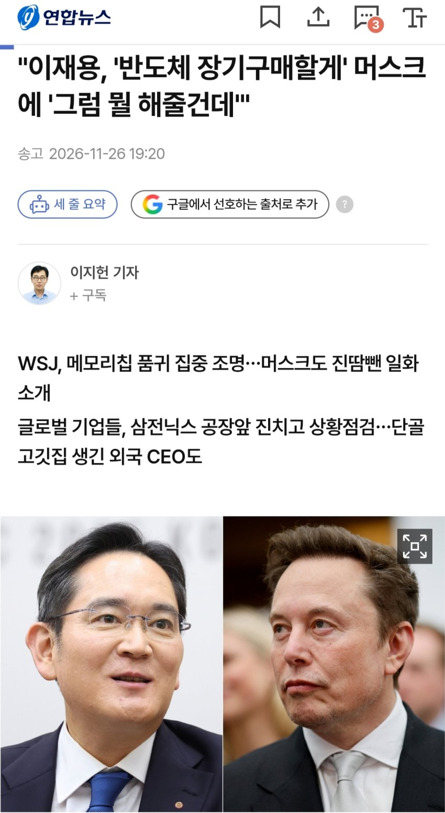
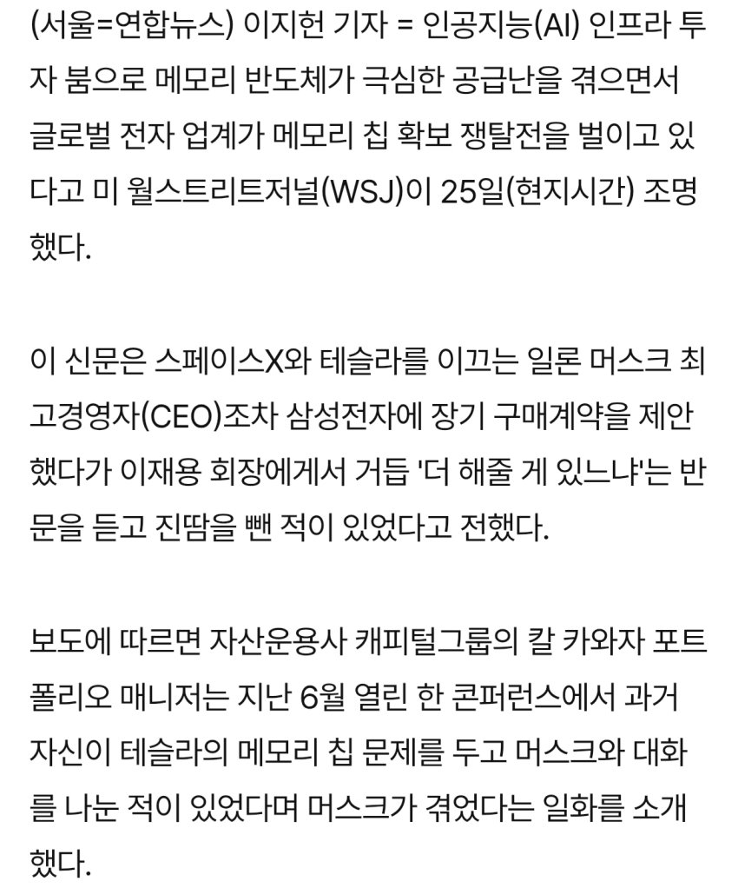
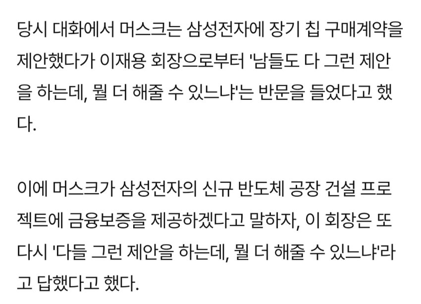
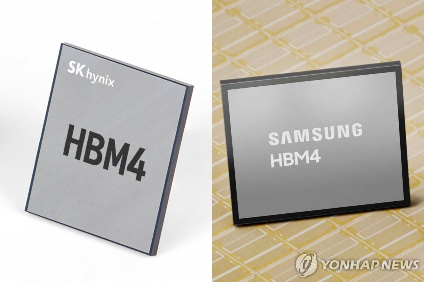
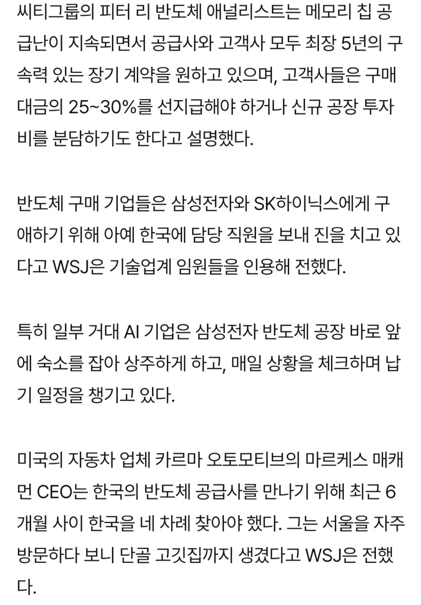

"이재용, '반도체 장기구매할게' 머스크에 '그럼 뭘 해줄건데'" | 연합뉴스

"그래서 뭘 해줄건데?" ㄷㄷ
이재용회장 생긴 것과 다르게 쎄노

사실 삼전이나 하이닉스나 5년 장기계약 위주로 받는 실정이고
저 장기계약 조건도 갑질소리 나오는게,
1. 선수금이 전체계약금액의 25퍼나 되고 위반시 선수금 몰수
2. 초반에 계약 위반해도 막대한 5년치 공급규모 위약금 물어야 한다는 계약서를 쓰게 한다함
또 "최소 구매 의무" 조항도 삽입하는데 도중에 가격 떨어지더라도 정해진 비율 이상 구매해야하는 독소조항까지 있음
거기에 올해 7월 삼전은 우린 "롤링"계약방식으로 할거라고까지 함 ㅋㅋㅋ
( 5년계약시 매년 협상 후 자동으로 상시 남은 계약기간 5년 유지)
SK하이닉스도 어? 저거 좋노하며 따라함

따라서 업계에선 공급사가 절대갑 계약서고, 사실상 중도파기가 불가능한 구조라함
저렇게 삼전, 하이닉스가 한 계약 중 5년이상 장기계약 비중이 벌써 60퍼가 넘어감..
(원래는 10퍼 남짓)
삼전은 내년 공급 계약 75~80퍼가 5년 LTA 장기계약이라고 발표했다
애플 팀쿡게이가 잘 가르친 듯
댓글
수집 당시 댓글 165개
봇치쟝 · 11.27 20:10:49
ㅇㅇ · 11.27 20:11:26
· 베이린 · 11.27 20:41:24
ㅇㅇ · 11.27 20:11:50
ㅇㅇ · 11.27 20:11:56
ㅇㅇ · 11.27 20:12:13
· 겐쉰프 · 11.27 20:46:12
ㅇㅇ · 11.27 20:12:19
케떡 · 11.27 20:12:22
ㅇㅇ · 11.27 20:13:42
ㄹㅇㅋㅋ · 11.27 20:13:42
ㅇㅇ · 11.27 20:14:20
· 겐쉰프 · 11.27 20:45:50
ㅇㅇ · 11.27 20:14:27
· ㅇㅇ · 11.27 20:15:36
· ㅇㅇ · 11.27 20:20:18
· ㅇㅇ · 11.27 20:23:11
· ㅇㅇㅇ · 11.27 20:27:29
ㅇㅇ · 11.27 20:15:30
ㅇㅇ · 11.27 20:16:02
ㅇㅇ · 11.27 20:16:17
ㅇㅇ · 11.27 20:16:27
ㅇㅇ · 11.27 20:16:28
Doll · 11.27 20:16:39
삭제됨 · 11.27 20:16:41
· ㅇㅇ · 11.27 20:22:55
ㅇㅇ · 11.27 20:16:49
ㅇㅇ · 11.27 20:16:58
· ㅇㅇ · 11.27 20:17:24
· ㅇㅇ · 11.27 20:23:24
ㅇㅇ · 11.27 20:17:21
· 겐쉰프 · 11.27 20:45:33
ㅇㅇ · 11.27 20:17:27
· ㅇㅇ · 11.27 20:18:43
· ㅇㅇ · 11.27 20:19:19
· ㅇㅇ · 11.27 20:20:28
· ㅇㅇ · 11.27 20:25:04
· ㅇㅇ · 11.27 20:25:08
· ㅇㅇ · 11.27 20:26:39
· ㅇㅇㅇ · 11.27 20:29:53
· ㅇㅇ · 11.27 20:38:24
ㅇㅇ · 11.27 20:17:54
겐쉰프 · 11.27 20:18:01
샨테 · 11.27 20:19:07
· 샨테 · 11.27 20:19:27
· ㅇㅇ · 11.27 20:22:20
· ㅇㅇ · 11.27 20:35:26
ㅇㅇ · 11.27 20:20:18
· ㅇㅇ · 11.27 20:45:01
히이잉 · 11.27 20:21:20
ㅇㅇ · 11.27 20:21:28
ㅇㅇ · 11.27 20:21:31
ㅇㅇ · 11.27 20:22:15
ㅇㅇ · 11.27 20:22:21
· ㅇㅇ · 11.27 20:24:02
· ㅇㅇ · 11.27 20:44:30
· ㅇㅇ · 11.27 20:46:17
화실 · 11.27 20:23:22
ㅇㅇ · 11.27 20:23:53
· 소설쟁이 · 11.27 20:31:30
· 겐쉰프 · 11.27 20:45:07
ㅇㅇ · 11.27 20:24:44
ㅇㅇ · 11.27 20:25:05
식물빌런 · 11.27 20:26:12
· ㅇㅇ · 11.27 20:31:04
ㅇㅇ · 11.27 20:26:41
· 소설쟁이 · 11.27 20:31:53
ㅇㅇ · 11.27 20:29:18
ㅇㅇ · 11.27 20:29:49
· ㅇㅇ · 11.27 20:32:07
· ㅇㅇ · 11.27 20:34:58
· ㅇㅇ · 11.27 20:36:57
· ㅇㅇ · 11.27 20:39:24
ㅇㅇ · 11.27 20:30:00
ㅇㅇ · 11.27 20:30:21
· ㅇㅇ · 11.27 20:30:41
· ㅇㅇ · 11.27 20:31:33
ㅇㅇ · 11.27 20:32:36
· ㅇㅇㅇ · 11.27 20:37:34
· 겐쉰프 · 11.27 20:43:29
· 겐쉰프 · 11.27 20:43:46
ㅇㅇ · 11.27 20:33:14
ㅇㅇ · 11.27 20:33:17
2456778 · 11.27 20:34:01
ㅇㅇ · 11.27 20:34:45
· ㅇㅇ · 11.27 20:35:00
ㅇㅇ · 11.27 20:35:56
Adriel · 11.27 20:36:54
· Adriel · 11.27 20:40:30
ㅇㅇ · 11.27 20:37:16
ㅇㅇ · 11.27 20:38:46
ㅇㅇㅇ · 11.27 20:38:49
ㅇㅇ · 11.27 20:39:16
ㅇㅇ · 11.27 20:39:22
대답 · 11.27 20:39:44
ㅇㅇ · 11.27 20:40:56
히이잉 · 11.27 20:43:20
ㅇㅇ · 11.27 20:45:12
ㅇㅇ · 11.27 20:45:12
ㅇㅇ · 11.27 20:46:09
ㅇㅇ · 11.27 11:46:59
ㅇㅇ · 11.27 11:47:24
· ㅇㅇ · 11.27 11:58:18
ㅇㅇ · 11.27 11:47:32
ㅇㅇ · 11.27 11:49:02
· sunvssky · 11.27 11:52:00
· ㅇㅇ · 11.27 11:52:42
· ㅇㅇ · 11.27 11:52:48
· 디비자 · 11.27 11:53:04
· 디비자 · 11.27 11:53:31
· ㅇㅇ · 11.27 11:53:39
· 디비자 · 11.27 11:54:10
· ㅇㅇ · 11.27 11:54:22
· sunvssky · 11.27 11:54:46
· sunvssky · 11.27 11:55:18
· sunvssky · 11.27 11:56:21
· ㅇㅇ · 11.27 11:57:11
· ㅇㅇ · 11.27 17:03:06
· ㅇㅇ · 11.27 20:26:59
· ㅇㅇ · 11.27 20:40:46
ㅇㅇ · 11.27 11:49:58
ㅇㅇ · 11.27 11:50:17
· ㅇㅇ · 11.27 11:53:17
· 디비자 · 11.27 11:55:19
· ㅇㅇ · 11.27 11:56:32
· ㅇㅇ · 11.27 11:59:54
· sunvssky · 11.27 12:00:55
· ㅇㅇ · 11.27 20:14:27
· ㅇㅇ · 11.27 20:16:13
· ㅇㅇ · 11.27 20:18:18
· ㅇㅇㅇ · 11.27 20:23:39
· 11 · 11.27 20:26:08
· 겐쉰프 · 11.27 20:31:00
· 겐쉰프 · 11.27 20:31:14
· 겐쉰프 · 11.27 20:31:32
· 겐쉰프 · 11.27 20:31:55
· ㅇㅇ · 11.27 20:32:46
· ㅇㅇㅇ · 11.27 20:34:44
· ㅇㅇㅇ · 11.27 20:35:38
· ㅇㅇ · 11.27 20:37:45
· ㅇㅇ · 11.27 20:38:19
· 겐쉰프 · 11.27 20:39:19
· ㅇㅇ · 11.27 20:40:03
· 겐쉰프 · 11.27 20:40:28
· ㅇㅇ · 11.27 20:41:02
· 겐쉰프 · 11.27 20:41:15
· ㅇㅇ · 11.27 20:43:17
· ㅇㅇㅇ · 11.27 20:44:10
· ㅇㅇㅇ · 11.27 20:46:17
· 겐쉰프 · 11.27 20:46:44
ㅇㅇ · 11.27 13:00:27
ㅇㅇ · 11.27 15:05:52
· ㅇㅇ · 11.27 20:14:43
넝신 · 11.27 15:14:16
· ㅇㅇ · 11.27 15:30:32
· 넝신 · 11.27 15:30:55
· ㅇㅇ · 11.27 15:33:11
· ㅇㅇㅇ · 11.27 20:24:51
ㅇㅇ · 11.27 15:17:50
revilo · 11.27 16:17:52
달배냥이 · 11.27 16:45:23
란즈크네츠 · 11.27 18:35:58
· ㅇㅇ · 11.27 20:19:24
· ㅇㅇㅇ · 11.27 20:25:54
· 란즈크네츠 · 11.27 20:27:15